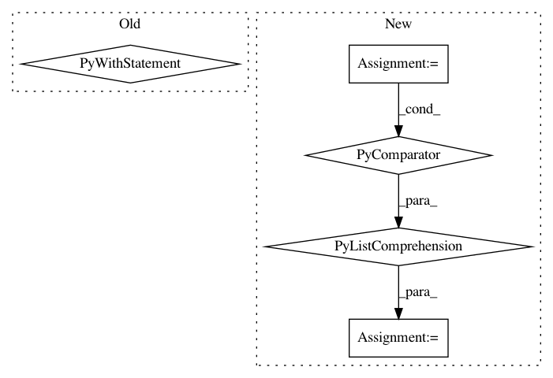

9166733c3c144739868fe0c30d57b861b4947b44,keras/backend/tensorflow_backend.py,,get_session,#,136
Before Change
_SESSION = tf.Session(config=config)
session = _SESSION
if not _MANUAL_VAR_INIT:
with session.graph.as_default():
_initialize_variables()
return session
def set_session(session):
After Change
candidate_vars.append(v)
// This step is expensive, so we only run it on variables
// not already marked as initialized.
is_initialized = session.run(
[tf.is_variable_initialized(v) for v in candidate_vars])
uninitialized_vars = []
for flag, v in zip(is_initialized, candidate_vars):
if not flag:
uninitialized_vars.append(v)
In pattern: SUPERPATTERN
Frequency: 4
Non-data size: 5
Instances
Project Name: keras-team/keras
Commit Name: 9166733c3c144739868fe0c30d57b861b4947b44
Time: 2017-09-13
Author: francois.chollet@gmail.com
File Name: keras/backend/tensorflow_backend.py
Class Name:
Method Name: get_session
Project Name: dmlc/gluon-nlp
Commit Name: 03b0e7061cf477fbeccb9c128ee76603df582d86
Time: 2018-09-04
Author: leonard@lausen.nl
File Name: scripts/word_embeddings/evaluate_pretrained.py
Class Name:
Method Name: load_embedding_from_path
Project Name: google/deepvariant
Commit Name: 7804a2fc6e24b3ecb9365e5459fb16ab6048ef8f
Time: 2018-08-28
Author: no-reply@google.com
File Name: third_party/nucleus/io/fasta_test.py
Class Name: InMemoryRefReaderTests
Method Name: test_iterate
Project Name: ray-project/ray
Commit Name: dcb9e03fde3116f7c43787947ea6f0b37ddb3210
Time: 2020-09-08
Author: rkooo567@gmail.com
File Name: python/ray/tests/test_placement_group.py
Class Name:
Method Name: test_atomic_creation